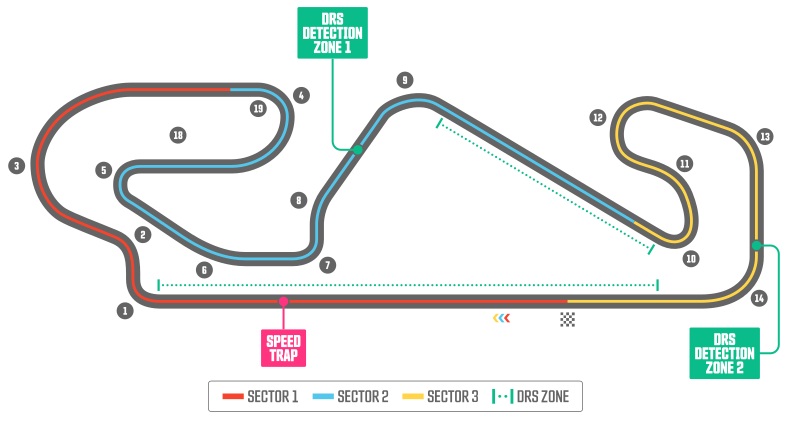

1The question
Each lap a strategist decides: pit now or stay out. The stakeholder’s baseline agent planned with the simulator that graded it. We split the two: can a language-model (LLM) agent make good pit calls seeing only the race so far?

Each lap a strategist decides: pit now or stay out. The stakeholder’s baseline agent planned with the simulator that graded it. We split the two: can a language-model (LLM) agent make good pit calls seeing only the race so far?
Per scenario (race, driver, lap) the LLM (qwen3-30b-a3b) calls tools for up to 10 turns, then submits PIT plus a tyre, or STAY OUT; two submit-only turns force a call. The belief optimizer turns the call into a plan. PITWALL = belief simulator + optimizer + LLM front end.
Regret is the extra remaining-race time (s) of a plan over the hindsight reference: the best plan with at most two more stops, timed in a deterministic replay of the race fitted on all its laps, with no safety cars or traffic. Lower is better.
Held-out4 races × 25 scenarios: Monaco 2019,
Sakhir 2020, Austria 2024 and 2025. Registered in advance, run once at tag d4-final-eval.
The agent had never been run on them.
Prior exposure: baselines were scored once on Monaco 2019 under an earlier simulator; Sakhir 2020 and Austria 2025 were in an earlier model comparison; Austria 2024 had none.
Development6 races the simulator was calibrated on, 150 scenarios.
Comparators: the teams’ actual strategy; the belief optimizer (same belief, no LLM); rule baselines. Differences are agent minus comparator on the same scenarios. Brackets: 95% interval, resampling drivers within races.
Held-outSame average cost; fewer large errors (suggestive here, clear on development races). The teams are more often near-perfect.
| held-out, n 98 | PITWALL | Teams | difference [95%] |
|---|---|---|---|
| Mean regret | 8.68 s | 8.87 s | −0.19 [−1.88, 1.43] |
| Median | 6.2 s | 2.6 s | |
| Within 1 s | 30% | 36% | −6 pts [−18, 4] |
| Over 20 s | 13% | 19% | −6 pts [−13, 0] |
| Over 30 s | 2% | 4% | |
| 90th percentile | 22.6 s | 28.0 s | −5.5 [−10.4, 0.2] |
| Worst | 31.5 s | 48.9 s |
Without Austria 2024 (45% of the agent’s regret): agent mean 6.51 s; minus teams −0.16 [−2.33, 1.99], minus belief optimizer +0.05 [−0.08, 0.18], minus one-stop −3.35 [−6.23, −0.51]. Conclusions unchanged.
| agent minus … | Monaco 2019 | Sakhir 2020 | Austria 2024 | Austria 2025 |
|---|---|---|---|---|
| Agent regret (s) | 8.6 | 8.4 | 16.2 | 2.5 |
| vs teams’ actual | +1.7 | −2.4 | −0.3 | +0.2 |
| vs belief optimizer | −0.03 | −0.02 | −0.25 | +0.20 |
| vs one-stop rule | −4.7 | −3.8 | −7.5 | −1.4 |
Austria 2024: the hindsight reference uses Soft in 23 of 25, priced from few race laps (the sampled drivers’ only Soft stint is a final 7 laps); the belief priced Soft from practice. Agent, belief optimizer and teams sit about 16 s from the reference; fixed one-stop 23.0 s, fixed two-stop 35.9 s.
Nothing measurable over the belief optimizer: −0.03 s [−0.29, 0.22]. Equal on average, not identical: 39 exact ties, same plan in 33 of 100. Where its immediate call differs (11), the optimizer is better in 8; over those 11 the agent is 0.41 s worse on average. Pit-now calls agree with the reference 83% of the time; “always stay out” agrees 90% (10% of scenarios are pit-now).
One-stop caveat: that rule always makes one more stop. Agent minus rule: +7.44 s [3.59, 11.42] before the driver’s first stop (n 25), −8.53 s [−10.66, −6.37] after it (n 69).
| agent minus | development | held-out |
|---|---|---|
| teams’ actual strategy | ||
| mean (s) | −3.25 [−5.50, −1.25] | −0.19 [−1.88, 1.43] |
| share over 20 s | −12 pts [−20, −6] | −6 pts [−13, 0] |
| 90th pct (s) | −9.3 [−16.0, −2.6] | −5.5 [−10.4, 0.2] |
| belief optimizer | ||
| mean (s) | −0.16 [−0.58, 0.20] | −0.03 [−0.29, 0.22] |
Clear on development, suggestive on held-out. Mean regret roughly doubles for both policies that plan on the belief: agent 3.95 → 8.93 s, belief optimizer 4.11 → 8.95 s (teams 7.15 → 8.87 s).
Without the oracle, PITWALL matches the teams on average in our simulator. Its quality comes from the belief simulator and optimizer, not the LLM, at a median 26 s and about 85k input tokens per decision. The LLM’s value is a legal, explained call; better tyre models are where gains are.